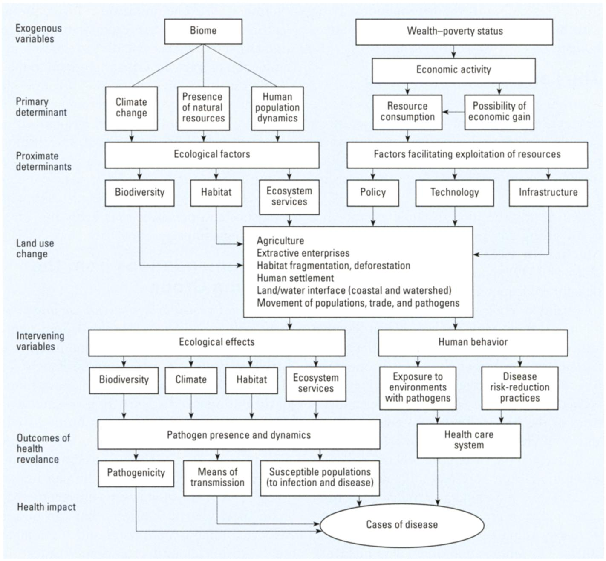

class: center, middle # Science, Development, and Practice:<br>Health and disease ### ANTH 569<br>3/28/16 --- # Papers 1. Bloom 2007 * *Sustainable health: A new dimension of sustainability science* 1. Patz et al. 2004 * *Unhealthy landscapes: Policy recommendation on land use change and infectious disease emergence* 1. Lapinski et al. 2015 * *Recommendations for the role of social science research in One Health* 1. Whittaker 2015 * *The role of social sciences in One Health – Reciprocal benefits* --- # Food for Thought (1/2) > "The simple view is that medicine exists to fight death and disease, and that is, of course, its most basic task. Death is the enemy. But the enemy has superior forces. Eventually, it wins. And in a war that you cannot win, you don't want a general who fights to the point of total annihilation. You don't want Custer. You want Robert E. Lee, someone who knows how to fight for territory that can be won and how to surrender it when it can’t, someone who understands that the damage is greatest if all you do is battle to the bitter end." — Atul Gawande, <em>Being Mortal</em> (p187) --- # Food for Thought (2/2) > "The problem of medicine and the institutions it has spawned for the care of the sick and the old is not that they have had an incorrect view of what makes life significant. The problem is that they have had almost no view at all. Medicine’s focus is narrow. Medical professionals concentrate on repair of health, not sustenance of the soul. Yet - and this is the painful paradox - we have decided that they should be the ones who largely define how we live in our waning ways. For more than a half a century now, we have treated the trials of sickness, aging, and mortality as medical concerns." — Atul Gawande, <em>Being Mortal</em> (p128) --- # Causes of Untimely Death <img src="http://www.wired.com/wp-content/uploads/blogs/design/wp-content/uploads/2023/11/in_killyou_f.jpg" style="width: 65%; display: block; margin-left: auto; margin-right: auto"> <center><small>Source: <a href="http://www.wired.com/2013/11/infoporn-causes-of-death/">Wired</a></small></center> --- # Patz et al. 2004 (1/2)  <center><small>Conceptual Model</small></center> --- # Patz et al. 2004 (2/2) 1. Given that, of the causes of death, infectious diseases are declining while deaths due to noncommunicable disease and natural disasters are growing, is a concentrated effort on infectious disease appropriate? 1. What are some examples of policies that could be implemented to change patterns of land use? 1. Assuming that the regional "Centers for Excellence" would be based at universities located primarily in wealthy, Western areas, how would "providing information on good science to local communities" have a substantial impact on non-local (or global) health issues? --- # Lapinski et al. 2015 1. Are the authors, who are scholars in Communication, Agriculture, and Veterinary Medicine, qualified to speak on the potential contributions of social science broadly or on a scientific understanding of human behavior? Is the term "social science" adequately defined as "researchers who study humans"? 1. How can differences in the perception of health and how health is contextualized cross-culturally be reconciled with institutionalized medical perceptions of health? 1. How could this paper be improved through better integration with existing work on socio-ecological systems and with established concepts from social science and sustainabile development? --- # Whittaker 2015 1. Compare and contrast the three models presented in Figures 6.1, 6.2, and 6.3. Which is most comprehensive? Which is most complex? Which is most readily applied? Are there significant omissions? 1. Are holistic methods like "multispecies ethnography" and "food anthropologies" too local and intensive in time and effort for present needs in One Health? 1. What important potential contributions of social science does this chapter mention that Lapinski et al. 2015 did not consider?